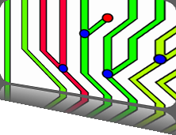

5th Symposium on Biological Data Visualization
10- 11 July // Dublin, Ireland @ ISMB/ECCB 2015
10- 11 July // Dublin, Ireland @ ISMB/ECCB 2015

Overview
Visualizing RNA Secondary Structure with Base Pair Binding Probabilities
The redesign contest recognizes the importance of effective encodings and clear visual communication in display of complex quantitative information.
Chairs
KU Leuven, Belgium
ryo.sakai[at]esat.kuleuven.be
CERN, Switzerland
eamonn.maguire[at]cern.ch
Background
A range of RNAs transcribed from the human genome that do not code for proteins is called non-coding RNAs (ncRNAs) and plays critical roles in many central cellular processes. These nRNAs have a variety of catalytic properties and known to be structurally and functionally versatile. The primary structure of ncRNAs refers to the linear sequence of nucleotides, and the secondary structure refers to the two dimensional representation of RNA structure based on internal base pairing. Although the primary structure tends to be less conserved compared to protein molecules, each class of ncRNA has shown to have a characteristic secondary structure.
Computational biologists have developed methods to predict the secondary structures from a primary sequence of RNA. The outputs of this calculation includes the minimum free energy structure (MFE) and equilibrium base pairing probabilities. These outputs are typically visualized as a “dot-plot”, where a box on a square grid of n x n encodes the base pair binding probability in its area on a logarithmic scale. In addition, the predicted MFE structure is often represented as a secondary structure graph.
Challenge 1: Visualizing Uncertainty

Design an intuitive visual representation of RNA secondary structure to encode the uncertainty within all the possible base pairing possibilities. The top-right triangle of a dot plot encodes base pairing probabilities and the bottom-left triangle represents the MFE structure. The RNA sequence of n nucleotides is shown on the edge of the n x n square grid. The MFE secondary structure is visualized as a graph, where the color of each nucleotides depicts the strength of base pairing. The challenge is to design a structural representation that is in line with the uncertainty.
Challenge 2: Visualizing Sequence Evolution

Design a visual representation that support comparison of the predicted RNA structures. A single or couple of changes in a sequence can influence the structural stability of RNA, thus altering its function. To help address the researcher's hypothesis, the new design should support studying the evolution of HAR1 and other ncRNA sequences and their structures.
Useful Links
If you are not an RNA expert, or do not have a collaborator, don’t worry. We can help answer domain specific questions you may have via the BioVis 2015 Design Contest google group. We also recommend you to visit EteRNA to get you started on RNA folding by solving puzzles.
Submission
The entry for the contest can address either or both of challenges, but the outputs should be static images. Submissions consist of a design of a figure along with a 1 or 2-page abstract describing the methodology behind the design.
- The contest is open to everyone except contest organizers, data providers, and judges. We invite participation from individuals and teams, industry or academia. Individuals may participate on more than one team submission, and we'd love to see new collaborations spring up to address the design challenges;
- Submissions must be formatted according to the guidelines; otherwise we reserve the right to reject them without review;
- Please use the LaTex template provided. Alternatively, you can also modify the (IEEE VGTC) word template. The contest package is available from here;
- The submission should be no more than 2 pages and include at least one image of your design; and
- A video or screencast to explain the visual encoding is encouraged. Instead of attaching a video file in your submission, please send a link to download or upload the video to Youtube or Vimeo and provide its link.
The judges will select a winner and runner-up. A subset of selected contestants will have the opportunity to present their design in a session during the symposium, and entries that make significant contributions will be invited to submit a manuscript for inclusion in a BMC Bioinformatics Supplement on the 2015 BioVis Contests, in collaboration with the Data Analysis Contest. All accepted entries will be eligible for presentation at the symposium, either as short podium talks, or as design contest poster or demo presentations.
In addition to the journal publication, the shortlisted entries will be invited to collaborate with software engineers of the ViennaRNA package to make the new design available for RNA biologists.
Entry submission deadline: May1st, 2015.
For submission, please send your entry to the design contest chairs, using the email addresses mentioned at the top of this page.
Judging
The judges will be be looking for a redesign that enhances the narrative and makes good use of visual emphasis. The winning participant will have the opportunity to present their redesign in a session during the symposium. All entries will be made available to the participants and full reasoning for scores will be fed back to contest entrants from both visualization and biology experts.
Terms and Conditions
Given that the nature of this contest is subjective, the judges will provide a short description of the reasoning behind the scoring for each submission. All judges’ decisions are final.
By submitting an entry, you give the BioVis 2015 organizers permission to publish it in conference-related materials (web site, proceedings, companion papers marketing). Any usage or reference to any submission will include full credit to its authors.
Acknowledgement
We gratefully acknowledge the context and the dataset provided by Maria Beatriz Walter Costa, Henrike Indrischek, Katja Nowick and Christian Höner zu Siederdissen at The University of Leipzig for the purposes of the BioVis 2015 Design Contest.
Download
- The contest package includes the figures, data, submission template and instructions. Download from here.
Sponsors
BioVis 2015 is an official SIG of ISMB 2015

BioVis 2015 Supporters
Platinum:

Bronze:


We also acknowledge the support by BMC.

Please check out our thematic series in conjunction with BioVis 2014 and the proceedings in conjunction with BioVis 2013